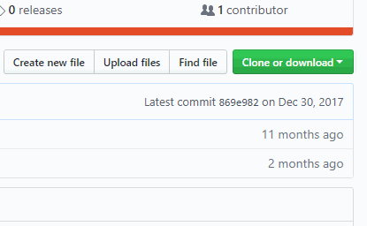
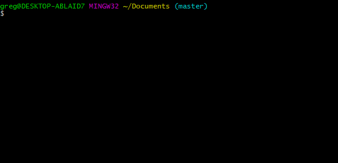

Module 10: Debugging, using Git and beginning your own project
Objective: a quick look at a few strategies and tools that may help you with your project.
Embarking on your project
A common scenario: you've learned something new and unfamiliar with some guidance, then you're cut loose and asked to make a project! The big question is: how to move from that structured environment and forge ahead under your own power? This module will hopefully offer some guidance in that regard, but importantly, I (your instructor), your peers, and MB staff and volunteers will be here to keep you on track, so as long as you're engaged, you'll be just fine!
Think back to the Choose Your Own Adventure game your group made at the beginning of the semester. First, you planned out your game, then gathered necessary skills and resources, and coded it up. Along the way, you may have run into a situation or two that forced you to change plans a bit, and you adapted. That's pretty much the plan here, too--plan, find resources, build, repeat (as necessary).
Planning
Start by spending an hour or so to do intensive planning with your team. Some questions to ask (it's OK if you can only make a partial answer for starters):
- Do we want to make a game or web application?
- What is the purpose/goal of our game or application?
- What type of features do you want your game or app to have?
- What parts of the project is each group member interested in doing?
Your group may also benefit from a brainstorming session. An effective approach to brainstorming involves everyone in the group writing down as many ideas as possible for 5 minutes in silence. Do not filter your ideas at this stage--crazy is OK. After the idea-generating stage, the group will reconvene and discuss the ideas to filter out the most engaging and practical of them. Voting, using a process of elimination, or ranking system may be useful in this filtering stage.

Once you have an idea, try to simplify the idea as much as possible. You'll always be able to add new features to whatever it is you make, but if the scope of your ideas is vast, it'll be much harder to get momentum going and feel like you're making progress.
Another easy way to go about choosing a project is by doing your own version of a standard, classic game or app. This more or less eliminates the problem of planning right away, and your team can go right into finding resources and writing code. Check the resources page to get connected with some ideas.
I'd also like to speak frankly: platformers and games with heavy physics components tend to be popular, but these can be challenging first projects, so I try to discourage them. If you're set on it, warnings be damned, go for it. One way to make a successful physics-based project is to use a game framework, so I'll introduce one later in this module. Either way, we'll make it happen, but know that platformer usually means serious coding ahead!
Don't forget to use Google Docs or create a text file in your group's Github repository to organize your ideas, resources, and todos as you work on the project.
Finding resources
Once you have a project goal, you can begin gathering resources. Are there any tutorials that apply to your game or application or to something similar? What technologies will be necessary? This can be a difficult task at first, since there are so many unknowns in the field, but I'll help you filter your research to hone in on valuable resources. The important thing is working on your ability to collect, evaluate, filter, and utilize these resources; you'll be doing it constantly throughout your programming journey. This website's resources page is a good place to start exploring!

Writing your app

And now, the fun part! Dive into writing your app as soon as you're confident with your plan and have a few basic resources on hand. Getting started is the hardest part, and the key to getting ahead is getting started. And, of course, the key to getting started is breaking the large task into smaller tasks and working on the easiest one.
A very important part of this process is ensuring everyone in the group is contributing! Remember, your group is counting on you to step up and offer to help out every day. If you're not able to find something to do at a given moment, head over to Codecademy to improve your JS. This will be helpful to your team later on. Playing games or surfing the net is going to distract your teammates, so schedule a time outside of class to kick it with them to do that stuff.
And don't even think about procrastinating!
Debugging
All right, let's talk technically from here out. First topic: debugging. I'm sure you've encountered some error in your code so far--it's normal! The truth is, almost every program doesn't work at first. Debugging is a huge topic and, like computer programming itself, is just as much of an art as a science.
The best way to debug is to avoid bugs in the first place. This means following clear logic, planning, naming variables descriptively, organizing your project's logic in clear function and classes, using comments, etc. Easy to say, hard to do.
But when bugs inevitably do show up, they are a great opportunity to learn. The three kinds of bugs are syntax errors, runtime errors, and logic errors. Syntax errors are generally easy to fix: the browser's console (see module 5) will show you the error explaining the problem and the line number it occured on. Your job is to go fix it. Often, it's a simple typo, although sometimes it's a bit more involved, but basically it boils down to JS plain not understanding what you typed in. As you know by now, every letter matters, case sensitivity matters; it's totally unlike English, where you can pretty much misspell everything and folks generally know what you mean.
Runtime errors are when everything is typed to the language's syntactical standards, but at some point in the program, the code attempts to do something that is disallowed. For example, if I pass strings into a function that requires number input or I attempt to access an array element that doesn't exist, the program will crash. These errors can be trickier to navigate than syntax errors and require an understanding of your program's state--what values the variables contain and what conditions are present when the error occurred. Resolving runtime errors uses techniques discussed below, but with the advantage of JS providing a line number where the error was thrown.

Logic errors, on the other hand, occur when JS says your program is fine and dandy, no errors show in the developer console, but your program still isn't behaving as you expect. Maybe a variable you're expecting to have some value at some point in the code's execution doesn't have that value, or a conditional you expect to be true is evaluating false. Resolving these types of bugs requires a bit of detective work and problem-solving. These bugs are great because they force you to understand your program logic on a deeper level than you do, and facing them head-on will really improve your programming skills.
Some concrete strategies for resolving these logic errors include inserting console.log()
statements in your code and re-running your program to see if the value of variables and conditionals matches
your expectations. Sometimes, entire blocks of code aren't even executing, and a simple
console.log("Is this even working?"); call in the code block in question
will tell you a lot about your program's state.
The console also offers the ability to interactively type in a variable
name that exists in your program's global scope (i.e. isn't inside a function) and see information about it or
execute test code. The console also allows breakpoints to be set (for Chrome, this feature is in the Sources tab
under "Show debugger"). This means that your code will stop running on the line(s) you've told it to, and you can
poke around and check variable values, conditionals, and so forth to diagnose your logic problem.
All in all, debugging is a very big topic, so this is just a taste of the agony and ecstacy in store for you. Since this is an introductory course, as mentioned, we've got folks on hand to make these debugging procedures as painless and educational as possible, so let a mentor or the instructor know if something is going wrong, and we'll walk you through it!

Git and terminal
A little background
Last topic: using Github, git and the command line. As with debugging, these are complex topics, so I'm only offering a small taste of these tools. You know by now that Github can host your website and store your code. You may also know that each time you upload code, you've made something called a "commit," which is a version of a repository. Github is a repository host and interface for a tool called git, which is operated by typing commands on a text-only screen called a terminal and is the backbone of version control. This terminal, without getting too technical, is part of Unix, a really old and powerful operating system that Mac's OS is built on top of. All developers need to be familiar with Unix and git in addition to programming languages. Staring for days on end at black screens with monospace text makes programmers feel cool (it's a pretty useful tool, too).
Terminal basics
Using a terminal, you can navigate through folders and perform actions on files just like you do with
your mouse. To start a terminal session on Mac, click the magnifying glass in the top-right corner and type
"terminal," or click on the shortcut link in your dock. When the screen appears, you'll see a prompt
which shows your current directory (folder). Type pwd to see a path to your current directory.
You can show a list of the files in your directory by typing
ls and you can change to another folder by typing
cd foldername. If there are
spaces in the folder name, use quotes. Type cd .. to go to the folder "above" the one you're
currently in. Feel free to check a
basic list of terminal commands to learn
more useful things you can do on the command line. For now, pwd, ls and
cd should be sufficient.
Setting up git
OK, now that you're comfortable moving around directories in the terminal, let's learn how to set up git on your computer. From a prior semester, someone else may be logged in, so you'll want to change users by typing in terminal:
$ git config --global user.name "Bob"
$ git config --global user.email "bob@example.com"and ensuring that your computer's keychain hasn't saved the password automatically.
Creating and cloning a repository
After you've set up your git credentials, go ahead and create a repository for your project. Choose a simple repository name; long names with unusual characters or alternating capitalization may impact your (and your users') ability to type it in correctly. It's a good idea to initialize the repository with a readme.
The next step is to get a copy of your repository to your computer. This is called cloning and involves using terminal.
-
Open your repository in your browser and click the green button that says "Clone or download."
-
Copy the repository name (example:
https://github.com/ggorlen/mb.git) to the clipboard. -
Open terminal and navigate to the folder you'd like to clone the repo to, and enter
git clone https://github.com/ggorlen/mb.git(or whatever your repo name is--you can paste it from your clipbboard). Optionally, typelsto see your freshly cloned directory. -
Type
cd your-repo-nameto open your new project directory and (optionally) typelsagain to see the cloned files.
Making a commit and pushing changes to Github
At this point, I'll walk you through a very simple workflow that will work for solo projects. Once you master this, you can choose a slightly more elaborate workflow that will allow you to collaborate on shared repositories.
With the repository on your computer, you can start coding. When you finish making changes,
it's time to commit them to the remote repository. Type git add . with
the terminal open in the project directory. This
collects all modified files for the commit. Next, type git commit -m "descriptive message".
This message is important because it explains to your future self and your collaborators what modifications
you made to the project. Lastly, type git push origin master. This will push your
changes up to Github's cloud server.

Next steps
Once you're looking to get in a regular rhythm for your git coding projects, try finding a nice workflow. A typical git workflow uses forking, branches, tags, and pull requests. The director of curriculum at MB has a great suggested workflow outline which you can utilize, and is an expansion on the simplistic version I've offered here.
You may want to add your teammates as collaborators on your repository. This means they can edit the files directly without requiring your review.As mentioned, git is an industrial strength tool, so don't worry about going too deep or getting everything right. If you encounter any troubles, I'm here to help you sort them out. Commit often, because when you do, you can always rewind your project to that point in time should problems occur in the future (for example, accidentally deleting your entire project). There are also plenty of resources online including videos like this that are extremely informative. The best way to learn git, as with normal programming, is to play around with it a lot, looking up commands and following tutorials as you go.